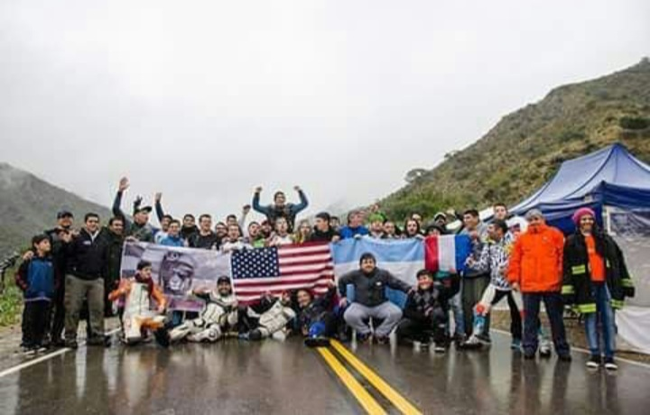
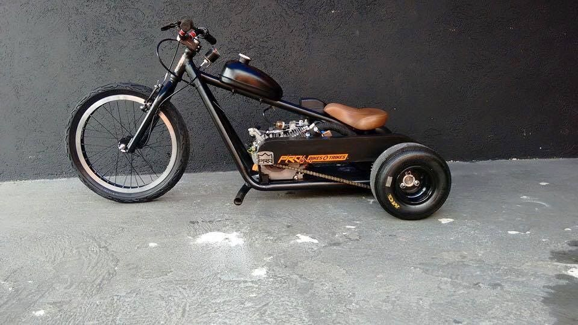

Este deporte es relizado en rutas de poco transito, estas son cortadas por la policia de dicho lugar. Para realizarlo es necesario el uso de protecciones como casco, pecheras, rodilleras, coderas y zapatillas de poco uso. Tambien es recomendable el uso de pantalon largo y alguna prenda de mangas largas como buzos, remeras o camperas. El deporte esta siendo realizado en distintos paises como Argentina, Brazil, Colombia, Peru, Ecuador, España, Francia, Italia, Reino Unido, etc pero este no es muy conocido como bmx o descenso de montaña.
Speed: este es realizado en rutas sin necesidad de propulcion como seria un motor o pedales, dependiendo de la pista y de la habilidad del piloto se podria alcanzar un velocidad mayor a 100 como susede en distintos lugares. Los trikes deben tener frenos delanteros como de disco o v-brake, caños de polipropileno de alta densidad en las ruedas traseras, cuadro de speed trike y manubrio.
Slider: en esta modalidad no es necesario el uso de gran veocidad como en speed pero si es necesario una gran habilidad por parte del piloto para poder driftear en la pista. Estos trikes deben tener cuadro de slider, caño de polipropileno de baja densidad y manubrio.
Como muchas cosas estos pueden ser modificados para diversion o hasta llegar al punto de ser chopper. Diversion: estos pueden tener un motor en la parte trasera o pedales en la rueda delantera, estos pueden ser modificados propiamente o con ayuda de alguien profecional como mecanicos o soldadores.

Chopper: a estos se les modifica las ruedas traseras con ruedas de autos y las delanteras con ruedas de motos, tambien se les puede agregar un motor en la parte trasera y pocas personas les ponen nitro.
